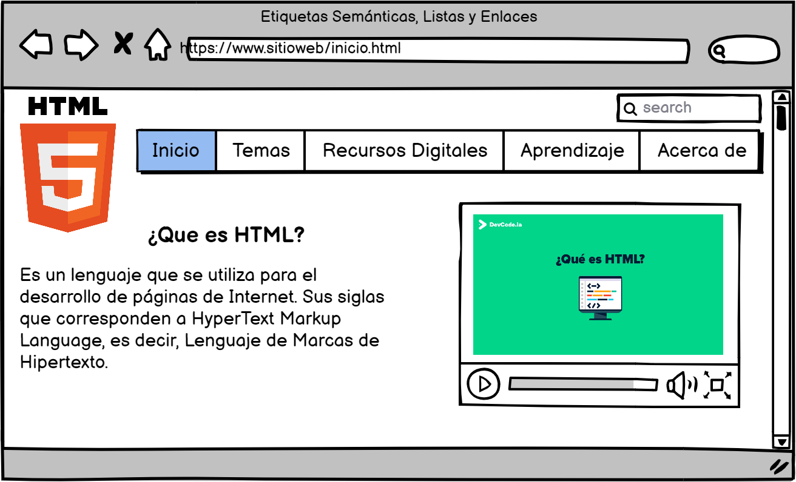

Etiquetas semánticas
Este tipo de etiquetas nos sirven para que cualquier mecanismo automático (un navegador, un motor
de búsqueda...) que lea un sitio web logre identificar con exactitud qué partes de su contenido
corresponden a cada una de las partes del sitio. Observando esas etiquetas semánticas estructurales,
cualquier sistema podrá procesar la página y saber cómo está estructurada. Algunas de las etiquetas son:
section: se utiliza para representar una sección "general" dentro de un documento o aplicación,
como un capítulo de un libro.
Article: representa un componente de una página, consiste una composición autónoma en una página o
sitio web con la intención de que pueda ser reutilizado y repetido
Aside: es una sección de la página que abarca un contenido relacionado con el contenido que lo
rodea, por lo que se le puede considerar un contenido independiente. E
Header: representa un grupo de artículos introductorios o de navegación.
Nav: sección de una página que enlaza a otras páginas o a partes de la página.
Footer: representa el pie de una sección, con información sobre la página
Hgroup: encabezado de una sección.
GARRO, A. (2014). Html5. licencia Creative Commons. Recuperado de
https://www.academia.edu/download/54171213/HTML5.pdf.
Listas
Encontramos diferentes tipos de listas que son:
Listas no ordenadas o no numeradas se define con la etiqueta li
Listas ordenadas o numeradas, se trabaja con la etiqueta ol
dl representa una lista descriptiva encerrando una lista de grupos determinados por dt
Sánchez Riquelme, J., & Luján-Mora, S. (2013). iDESWEB: HTML: listas. Recuperado de
https://rua.ua.es/dspace/bitstream/10045/26802/1/HTML%20-%20Listas.pdf.
Enlaces
Los enlaces se generana a traves de la etiqueta a y, a diferencia de otros, lleva siempre dentro de
la etiqueta un atributo ya sea a HREF="" o a NAME=""
a hfer="url": Es el mas habitual de los atributos y sirve para saltar entre diferentes URLs.
a name="parte1">Primera parte: Utilizamos el atributo name para dar nombre a una sección de
nuestro documento. Posteriormente, cuando en nuestro documento queramos incluir un vinculo a dicha
sección escribiremos: A HREF="#parte1">Ir a la primera parte
Gracia Murugarren, J. (2019). Creación de enlaces. Recuperado de
http://biblioteca.udgvirtual.udg.mx/jspui/handle/123456789/2865.
Mockup Sitio Web
